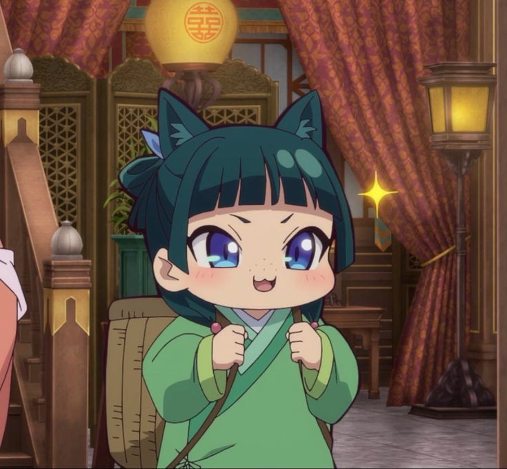

Tablas
| COMIDA | JUEGOS | DEPORTES | HOBBIES | ANIMALES |
|---|---|---|---|---|
| Pizza | FIFA | Futbol | Dibujar | Perro |
| Hamburguesa | Minecraft | Wally | Cantar | Gato |
Los Diarios de la Boticaria
Maomao

Maomao es una boticaria brillante, pragmática y cínica que se oculta bajo una apariencia descuidada para evitar intrigas. Obsesionada con la medicina y los venenos, utiliza su agudeza científica y lógica deductiva para resolver misterios en la corte imperial, mostrando total indiferencia hacia el romance, el estatus o los lujos cortesanos.
Listas ordenadas
- Comida
- Juegos
- Deportes
- Hobbies
- Animales
Listas no ordenadas
- Comida
- Juegos
- Deportes
- Hobbies
- Animales